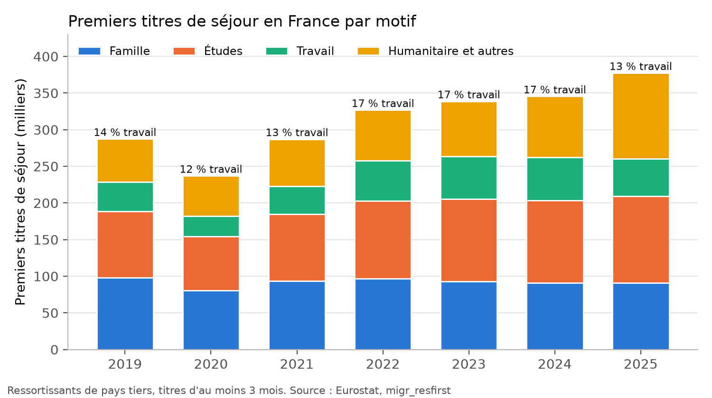

← Tous les thèmes · 3 sur 16
Immigration, islamisme et identité
Les chiffres de base sont souvent justes ; deux comparaisons sont forcées et la mesure phare bute sur le droit.
- ✓Exact 1
- ≈Proche 3
- ✕Inexact 1
- ◆Opinion ou promesse 1
5 affirmations et 1 mesure · 8 sources
1Ce qu'il dit
Ses mots, avant toute vérification. Les étiquettes numérotées renvoient à l'affirmation vérifiée plus bas, sous le même numéro.
Diagnostic
Une « immigration de peuplement » plutôt que de travail
« seuls 13 % des nouveaux titres de séjour sont délivrés pour travailler », sur « 400 000 » ou « 500 000 entrées annuelles légales ». Il veut « maîtriser notre peuplement ».
Un État qui n'applique pas ses décisions
Le taux d'exécution des OQTF serait « inférieur de plus de 35 points à la moyenne européenne », « 95 % des expulsions décidées n'ont jamais lieu ».
Un coût social
L'AME « coûte près d'1,4 milliard par an pour près de 500 000 bénéficiaires, deux fois plus qu'il y a 15 ans ». Les prestations non contributives versées aux étrangers sont à réduire.
Une poussée de l'islamisme
« 38 % des musulmans de France approuvent désormais tout ou partie des positions islamistes, contre 19 % il y a trente ans » (sondage Ifop).
Une transformation démographique
Baisse des naissances de parents français, hausse de celles de parents étrangers ; « près de 25 % de naissances en moins qu'en 2010 ». Il en fait un argument pour une politique nataliste autant que migratoire.
Mesures proposées
| Mesure | Ce qu'il en dit | Vérifié plus bas |
|---|---|---|
| Diviser par huit la délivrance de titres de séjour | objectif de 80 000 entrées par an, visas étudiants compris (octobre 2026) ; quotas de main-d'œuvre qualifiée | ◆2Promesse |
| Supprimer l'AME, la remplacer par une aide d'urgence | « 700 millions d'euros d'économies » (programme) | ≈4Arrondi |
| Conditionner le regroupement familial (ressources, tests d'intégration) | — | — |
| Fin de l'automaticité du droit du sol | — | — |
| Rétablir le délit de séjour irrégulier, expulser les étrangers condamnés pour délits graves et les fichés S étrangers | — | — |
| Réviser l'accord franco-algérien de 1968 | — | — |
| Référendum sur l'immigration, primauté du droit national, sortie de la CEDH « en dernier recours » | voir aussi le thème Institutions | — |
| Interdire les Frères musulmans et le voile à l'université | — | — |
2Ce que disent les chiffres
Une carte par affirmation : l'étiquette dit en quoi la phrase s'écarte des chiffres, la ligne en dessous dit pourquoi. Ouvrir une carte pour lire la citation exacte, l'explication, le calcul et les sources.
1✓Exact« Seuls 13 % des nouveaux titres de séjour sont délivrés pour travailler » (11/08/2026)13,5 % des premiers titres de 2025 ont un motif professionnel. Mais le premier motif est les études (31 %), pas la famille : « immigration de peuplement » est une lecture politique.
« L’immigration de travail a été remplacée par une immigration de peuplement : seuls 13 % des nouveaux titres de séjour sont délivrés pour travailler. »
David Lisnard, articles : « Il faut retrouver la grande France », 11 août 2026 · voir la source
✓Exact
Confirmé par les données publiques.
Exact Confiance : forte
- Ce qu'il annonce
- Données publiques
- Point de comparaison
Pourquoi
- En 2025, 50 848 des 377 462 premiers titres de séjour (13,5 %) ont été délivrés pour un motif professionnel. Les autres motifs : études 31 %, humanitaire et divers 31 %, famille 24 %.
- Le 29 août et le 9 septembre 2026, il dit « 17 % » : c'est le chiffre de 2022 à 2024. Les deux versions sont exactes pour leur année, mais il les mélange à trois semaines d'intervalle.
- « 400 000 titres » est un arrondi acceptable (377 000 selon Eurostat). Les « 500 000 entrées annuelles légales » (juillet 2026) ne correspondent à aucun chiffre de premiers titres.
- « Immigration de peuplement » est une lecture politique, pas un fait statistique. Une partie des étudiants repart, et les titres humanitaires répondent au droit d'asile.

Ses autres formulations (3)
- « Savez-vous, le pourcentage de nouveaux titres de séjour sur ces quatre cent mille personnes pour des gens qui sont venus bosser ? 17 % » (29/08/2026)
- « 400 000 titres de séjour supplémentaires. 17% seulement pour le travail » (09/09/2026)
- « l’immigration est devenue une immigration de peuplement, avec 500 000 entrées annuelles légales » (03/07/2026)
Le calcul
Premiers titres de séjour par motif
- Entrée :
EUROSTAT-PREMIERS-TITRES(migr_resfirst, France, ressortissants de pays tiers, toutes durées ≥ 3 mois, motifs : famille, études, activité rémunérée, autres). - Calcul : part du motif « activité rémunérée » (EMP) dans le total, par année. Le motif « autres » comprend la protection internationale (réfugiés), les titres humanitaires et divers.
Résultats du calcul
Ce qu'il dit : 400 000 ; « 500 000 entrées annuelles légales » · 13 % (août 2026) ; 17 % (fin août et septembre 2026)
| Mesure | Cas | Valeur | Remarque |
|---|---|---|---|
| Premiers titres de séjour délivrés (ressortissants de pays tiers) | France, 2022 | 326 948,0 titres | |
| Part des premiers titres délivrés pour un motif professionnel | France, 2022 | 16,9 % | famille 29.7 % ; études 32.3 % ; autres motifs (dont humanitaire) 21.1 % |
| Premiers titres de séjour délivrés (ressortissants de pays tiers) | France, 2023 | 338 877,0 titres | |
| Part des premiers titres délivrés pour un motif professionnel | France, 2023 | 17,34 % | famille 27.4 % ; études 33.2 % ; autres motifs (dont humanitaire) 22.1 % |
| Premiers titres de séjour délivrés (ressortissants de pays tiers) | France, 2024 | 345 587,0 titres | |
| Part des premiers titres délivrés pour un motif professionnel | France, 2024 | 16,96 % | famille 26.3 % ; études 32.6 % ; autres motifs (dont humanitaire) 24.1 % |
| Premiers titres de séjour délivrés (ressortissants de pays tiers) | France, 2025 | 377 462,0 titres | |
| Part des premiers titres délivrés pour un motif professionnel | France, 2025 | 13,47 % | famille 24.1 % ; études 31.4 % ; autres motifs (dont humanitaire) 31.1 % |
Les sources (1)
- AEurostat (données transmises par le ministère de l'Intérieur) · Premiers titres de séjour délivrés à des ressortissants de pays tiers, par motif (migr_resfirst) · relevé le 14/11/2026 ·
EUROSTAT-PREMIERS-TITRES
2◆PromesseMesure : « Diviser par huit la délivrance de titres de séjour » (programme)Diviser par huit laisserait environ 47 000 titres. Or famille et asile en représentent 208 000, fondés sur des droits : la mesure suppose les changements juridiques qu'il propose par ailleurs.
« Diviser par huit la délivrance de titres de séjour »
David Lisnard, programme : Programme Nouvelle Énergie — immigration, 1er septembre 2026 · voir la source
◆Promesse
Un choix politique ou une mesure à venir : seuls les faits et les ordres de grandeur qui l'entourent sont vérifiés.
Opinion ou promesse
- Ce qu'il annonce
- Données publiques
Pourquoi
- Diviser par huit les 377 000 premiers titres de 2025 laisserait environ 47 000 titres. Son objectif d'octobre 2026 (80 000 entrées, visas étudiants compris) correspond plutôt à une division par 4,7.
- Les titres familiaux et humanitaires représentent à eux seuls 208 000 titres en 2025. Ils découlent en grande partie du droit européen (regroupement familial), de l'article 8 de la CEDH (vie familiale) et de la convention de Genève (asile). La mesure n'est donc tenable que s'il obtient les changements juridiques qu'il propose par ailleurs (référendum, primauté du droit national, sortie de la CEDH en dernier recours). La faisabilité est à soumettre à des juristes.
Ses autres formulations (1)
- « un objectif de 80 000 entrées par an, visas étudiants compris » (28/10/2026)
Le calcul
Diviser par huit — ESTIMATION
- Calcul : total 2025 / 8 ; comparaison avec la somme des titres familiaux et « autres » (largement fondés sur des droits : vie familiale, asile).
- Estimation, non fiable à 100 % : à motifs constants ; ne tient pas compte des effets juridiques (directives européennes, article 8 de la CEDH, convention de Genève).
Résultats du calcul
Ce qu'il dit : diviser par huit ; 80 000 entrées par an
| Mesure | Cas | Valeur | Remarque |
|---|---|---|---|
| Premiers titres restants | 2025 divisé par 8 | 47 182,75 titres | ESTIMATION, non fiable à 100 % : à motifs constants ; 80 000 correspond à une division par 4,7 |
| Titres familiaux + humanitaires et autres (motifs en grande partie fondés sur le droit) | 2025 | 208 210,0 titres | à comparer à l'objectif de 47 000 à 80 000 : supposerait de réduire aussi des titres que le droit européen et la CEDH encadrent |
Les sources (1)
- AEurostat (données transmises par le ministère de l'Intérieur) · Premiers titres de séjour délivrés à des ressortissants de pays tiers, par motif (migr_resfirst) · relevé le 14/11/2026 ·
EUROSTAT-PREMIERS-TITRES
3✕Chiffre grossi« Le taux d'exécution des OQTF, inférieur de plus de 35 points à la moyenne européenne » (18/01/2024)Le taux d'exécution est bien très faible (7,5 à 13,8 % selon l'année). Mais l'écart avec l'Europe est de 14 à 26 points, jamais 35.
« Cette faillite, nous la constatons depuis plusieurs années au travers du taux d’exécution des OQTF, inférieur de plus de 35 points à la moyenne européenne »
David Lisnard, articles : Immigration, le compte n’est pas bon !, 18 janvier 2024 · voir la source
✕Chiffre grossi
La réalité va dans le même sens, mais le chiffre réel est nettement plus faible.
Inexact Confiance : moyenne (indicateur approximatif)
- Ce qu'il annonce
- Données publiques
Pourquoi
- Selon Eurostat, la France renvoie une faible part des étrangers qui ont reçu l'ordre de partir : 7,5 % en 2022, 8,9 % en 2023, 12,9 % en 2024, 13,8 % en 2025. La Cour des comptes écrit « autour de 10 % ».
- L'écart avec l'Europe est de 14 points avec l'UE à 27 en 2022 (21,4 %), et de 20 points avec l'UE hors France. En 2025, il est de 18 à 26 points selon la comparaison. Jamais 35 points.
- « 95 % des expulsions décidées n'ont jamais lieu » (2023, repris en 2026) : 91 à 92 % n'avaient pas lieu en 2022-2023, 86 % en 2025. C'est un arrondi défavorable, aujourd'hui dépassé.
Ses autres formulations (3)
- « seule une petite minorité – autour de 10 % – » (même texte, citant la Cour des comptes)
- « 95 % des expulsions décidées n’ont jamais lieu » (Sud Radio, 2023, repris en 2026)
- « plus de 90 % des déboutés du droit d’asile […] ne soient pas expulsés » (08/03/2021)
Le calcul
Exécution des obligations de quitter le territoire
taux d'execution = (ressortissants renvoyes (migr eirtn)) / (ressortissants ayant recu l'ordre de partir (migr eiord))
- Entrées :
EUROSTAT-OQTF,EUROSTAT-RETOURS(France, UE à 27). Calcul pour la France, l'UE à 27 et l'UE hors France (UE − France), par année. Ce ratio rapporte les départs d'une année aux décisions de la même année : c'est l'indicateur utilisé par la Commission européenne, approximatif car un départ peut suivre une décision antérieure. - Contrôle :
CC-IMMIGRATION-IRREGULIERE-2024(« autour de 10 % » des OQTF exécutées).
Résultats du calcul
Ce qu'il dit : « autour de 10 % » ; 95 % non exécutées · « autour de 10 % »
| Mesure | Cas | Valeur | Remarque |
|---|---|---|---|
| Renvois / ordres de quitter le territoire, France | 2022 | 7,52 % | UE à 27 : 21.4 % ; UE hors France : 27.2 % ; écart avec l'UE hors France 19.7 points |
| Renvois / ordres de quitter le territoire, France | 2023 | 8,9 % | UE à 27 : 23.1 % ; UE hors France : 28.6 % ; écart avec l'UE hors France 19.7 points |
| Renvois / ordres de quitter le territoire, France | 2024 | 12,94 % | UE à 27 : 27.3 % ; UE hors France : 32.9 % ; écart avec l'UE hors France 19.9 points |
| Renvois / ordres de quitter le territoire, France | 2025 | 13,76 % | UE à 27 : 32.1 % ; UE hors France : 39.3 % ; écart avec l'UE hors France 25.5 points |
| OQTF exécutées (estimation de la Cour) | Cour des comptes, 2022 | 10,0 % | 134280 OQTF prononcées en 2022 |
Les sources (3)
- AEurostat · Ressortissants de pays tiers ayant reçu l'ordre de quitter le territoire (migr_eiord) · relevé le 14/11/2026 ·
EUROSTAT-OQTF - AEurostat · Ressortissants de pays tiers renvoyés à la suite d'un ordre de quitter le territoire (migr_eirtn) · relevé le 14/11/2026 ·
EUROSTAT-RETOURS - BCour des comptes · La politique de lutte contre l'immigration irrégulière (rapport public thématique, janvier 2024) · relevé le 14/11/2026 ·
CC-IMMIGRATION-IRREGULIERE-2024
4≈Arrondi« L'Aide médicale d'État coûte près d'1,4 milliard par an pour près de 500 000 bénéficiaires, soit deux fois plus qu'il y a 15 ans » (03/07/2026)Le coût est exact (1 387 M€ en 2024) et les bénéficiaires un peu arrondis (465 208). « Deux fois plus qu'il y a quinze ans » n'a pas pu être vérifié : +70 % en dix ans selon le Sénat.
« Nous supprimerons l’Aide médicale d’État, qui coûte près d’1,4 milliard par an pour près de 500 000 bénéficiaires, soit deux fois plus qu’il y a 15 ans. »
David Lisnard, discours : Discours de David Lisnard à Saint-Raphaël, 3 juillet 2026
≈Arrondi
L'ordre de grandeur est le bon ; le chiffre est arrondi, souvent dans le sens qui l'arrange.
Proche Confiance : forte sur le coût, moyenne sur l'évolution
Pourquoi
- Dépenses réelles 2024 : 1 387 M€, dont 1 256 M€ pour l'AME de droit commun. 465 208 bénéficiaires fin 2024 : « près de 500 000 » arrondit vers le haut.
- Les dépenses ont augmenté de 70 % en dix ans selon le Sénat. « Deux fois plus qu'il y a quinze ans » n'a pas pu être vérifié précisément avec les fichiers téléchargés.
- Économie d'une suppression (programme : « 700 millions ») : au plus 1,26 Md€ brut, estimation non fiable à 100 %. Le rapport Evin-Stefanini (2023) prévient qu'une aide d'urgence de remplacement et le report de soins vers l'hôpital réduiraient l'économie nette, sans la chiffrer.
Ses autres formulations (1)
- programme : « Supprimer l’Aide Médicale d’État (AME) et la remplacer par une aide d’urgence : 700 millions d’euros d’économies »
Le calcul
Aide médicale de l'État
- Entrée :
SENAT-SANTE-PLF2026(dépenses réelles 2024 : 1 387 M€, dont 1 256 M€ pour l'AME de droit commun ; 465 208 bénéficiaires fin 2024 ; +70 % de dépenses en dix ans). - Économie maximale d'une suppression = dépense de l'AME de droit commun. Estimation, non fiable à 100 % : borne haute, sans le coût de l'aide d'urgence de remplacement ni le report de soins vers l'hôpital.
Résultats du calcul
Ce qu'il dit : près d'1,4 Md€ · près de 500 000 · « deux fois plus qu'il y a 15 ans » (bénéficiaires) · 700 M€ d'économies (programme)
| Mesure | Cas | Valeur | Remarque |
|---|---|---|---|
| Dépenses réelles d'aide médicale de l'État (droit commun + soins urgents) | 2024 | 1,39 Md€ | dont droit commun 1256 M€ |
| Bénéficiaires de l'AME de droit commun | fin 2024 | 465 208,0 personnes | 461 833 au 31 mars 2025 |
| Hausse des dépenses réelles d'AME en dix ans | 2014 → 2024 | 70,0 % | |
| Économie brute maximale si l'AME de droit commun disparaît sans compensation | suppression | 1 256,0 M€ | ESTIMATION, non fiable à 100 % : borne haute ; le remplacement par une aide d'urgence et le report de soins vers l'hôpital réduisent l'économie nette |
Les sources (1)
- BSénat (commission des finances) · Note de présentation de la mission Santé, PLF 2026 (aide médicale de l'État) · relevé le 14/11/2026 ·
SENAT-SANTE-PLF2026
5≈Périmètres mélangés« 38 % des musulmans de France approuvent désormais tout ou partie des positions islamistes, contre 19 % il y a trente ans » (09/12/2025)Le sondage Ifop est cité fidèlement. Mais le « 19 % il y a trente ans » mesurait une autre question : la comparaison dans le temps est fragile.
« Selon le dernier sondage IFOP de novembre 2025, 38 % des musulmans de France approuvent désormais tout ou partie des positions islamistes, contre 19 % il y a trente ans. »
David Lisnard, articles : Ne faisons pas de la laïcité un renoncement, 9 décembre 2025 · voir la source
≈Périmètres mélangés
Le chiffre existe, mais il ne mesure pas ce que dit la phrase, ou il est comparé à un chiffre qui ne couvre pas la même chose.
Proche Confiance : moyenne
Pourquoi
- L'Ifop écrit exactement : « 38 % des Français musulmans approuvent tout ou partie des positions islamistes ». Enquête par téléphone du 8 août au 2 septembre 2025, auprès de 1 005 musulmans tirés d'un échantillon de 14 244 personnes. Marge d'erreur d'environ ±3 points.
- La comparaison n'est pas directe : l'Ifop précise que 19 % mesurait en 1998 des « positions intégristes », une autre question. « Deux fois plus » est donc une lecture de l'institut, pas une mesure identique répétée.
- C'est un sondage commandé par une revue, pas une statistique publique. Pour la religiosité et l'intégration, l'enquête publique de référence est Trajectoires et Origines (Insee-Ined), non exploitée ici.
Le calcul
Sondage Ifop
- Entrée :
IFOP-ISLAM-2025(présentation des résultats). Aucun calcul : vérification de la citation, de la taille d'échantillon (1 005 musulmans) et de la question. Marge d'erreur indicative pour un échantillon de 1 000 : ±3 points autour de 38 %.
Résultats du calcul
Ce qu'il dit : 38 % (contre 19 % il y a trente ans)
| Mesure | Cas | Valeur | Remarque |
|---|---|---|---|
| Musulmans approuvant « tout ou partie » des positions islamistes | Ifop, août-septembre 2025 | 38,0 % | échantillon de 1005 musulmans : marge d'erreur d'environ ±3 points ; le 19 % de 1998 mesurait des « positions intégristes », question différente |
Les sources (1)
- DIfop (sondage) · État des lieux du rapport à l'islam et à l'islamisme des musulmans de France (novembre 2025), présentation des résultats · relevé le 14/11/2026 ·
IFOP-ISLAM-2025
6≈Chiffre daté« En vingt ans, les naissances d'enfants de deux parents français ont diminué de 13,7 %, celles d'enfants d'au moins un parent étranger ont augmenté de 63 % » (22/01/2024)Ses chiffres sont ceux de 1998-2018. Sur les vingt dernières années connues, la baisse des naissances de deux parents français est plus forte (−24,8 %) et la hausse des autres plus faible (+33,8 %).
« en vingt ans, le nombre de naissances d’enfants dont les deux parents sont Français a diminué de 13,7 % quand le nombre de naissances d’enfants dont au moins un des deux parents est étranger a augmenté de 63 % »
David Lisnard, tribune, Les écolo-déprimants contre la démographie, 22 janvier 2024
≈Chiffre daté
Le chiffre a été vrai, mais il est ancien ou dépassé.
Proche Confiance : forte
Pourquoi
- Ses chiffres correspondent à 1998-2018 : −13,3 % et +69,5 %. Sur les vingt dernières années connues en janvier 2024 (2003-2023), la baisse des naissances de deux parents français est plus forte (−24,8 %) et la hausse des naissances d'au moins un parent étranger plus faible (+33,8 %).
- En 2025, 28 % des naissances ont au moins un parent étranger. Attention : la série est rompue en 2023, le « second parent » pouvant désormais être une femme.
- « Près de 25 % de naissances en moins qu'en 2010 » (juillet 2026) : 833 654 en 2010, 644 343 en 2025, soit −22,7 %. Plutôt exact.
Ses autres formulations (1)
- « nous n’avons jamais fait aussi peu d’enfants – près de 25% de naissances en moins qu’en 2010 ! » (03/07/2026)
Le calcul
Naissances selon la nationalité des parents
- Entrées :
INSEE-NAISSANCES-NATIONALITE(figure 1, 1998-2025) ;EUROSTAT-NAISSANCES(naissances vivantes). - Calculs : évolution sur vingt ans des naissances « deux parents français » et « au moins un parent étranger » (un parent étranger + deux parents étrangers), pour plusieurs fenêtres (1998-2018, 2002-2022, 2003-2023) ; baisse des naissances 2010 → 2025.
- Rupture : depuis 2023, le « second parent » peut être la mère n'ayant pas accouché (Insee).
Résultats du calcul
Ce qu'il dit : -13,7 % en vingt ans · +63 % en vingt ans · « près de 25 % de naissances en moins qu'en 2010 »
| Mesure | Cas | Valeur | Remarque |
|---|---|---|---|
| Naissances de deux parents français | 1998 → 2018 | −13,29 % | 655856 → 568714 |
| Naissances d'au moins un parent étranger | 1998 → 2018 | 69,46 % | 112050 → 189876 |
| Naissances de deux parents français | 2002 → 2022 | −18,36 % | 658465 → 537595 |
| Naissances d'au moins un parent étranger | 2002 → 2022 | 40,31 % | 134280 → 188402 |
| Naissances de deux parents français | 2003 → 2023 | −24,77 % | 654357 → 492291 |
| Naissances d'au moins un parent étranger | 2003 → 2023 | 33,76 % | 138687 → 185512 |
| Part des naissances d'au moins un parent étranger | 2025 | 28,34 % | série rompue en 2023 : le « second parent » peut être une femme |
| Baisse du nombre de naissances | 2010 → 2025 | 22,71 % | 833654 → 644343 |
Les sources (2)
- AEurostat (données Insee) · Naissances vivantes, France (demo_gind) · relevé le 14/11/2026 ·
EUROSTAT-NAISSANCES - AInsee (état civil) · Naissances selon la nationalité et le pays de naissance des parents, 1998-2025 · relevé le 14/11/2026 ·
INSEE-NAISSANCES-NATIONALITE
3Conclusion
Les chiffres de base de Lisnard sont souvent justes : 13 % des premiers titres pour le travail en 2025, une AME à 1,4 Md€, un taux d'exécution des OQTF très faible, un sondage Ifop fidèlement cité. Il force deux comparaisons :
- l'écart d'exécution des OQTF avec l'Europe est de 14 à 26 points selon l'année, pas « plus de 35 » ;
- son « 19 % il y a trente ans » vient d'une autre question de l'Ifop.
« Immigration de peuplement » est une interprétation. Le premier motif de délivrance n'est pas la famille mais les études (31 %). Sa mesure phare, diviser par huit les titres, buterait sur les titres fondés sur des droits : famille et asile représentent 208 000 titres, soit quatre fois l'objectif.
Conventions de calcul
Résultats produits par calculer.py à partir de brut/ (catalogue sources.csv), dans resultats.csv. Les chiffres lus dans des PDF sont recopiés dans LUS_DANS_LES_PDF avec la phrase exacte, vérifiée avant tout calcul. Données téléchargées le 14/11/2026.
Le site statistique de la direction générale des étrangers en France refuse les téléchargements automatiques. Les titres de séjour et les éloignements viennent donc d'Eurostat, qui publie les données transmises par la France. Le champ diffère un peu des publications françaises : premiers titres d'au moins trois mois, sans les mineurs.
Toutes les sources du thème (8)
A Statistique publique (Insee, Eurostat, OCDE, ministères…) · B Contrôle et évaluation (Cour des comptes, Sénat, Assemblée…) · D Think tank ou partie prenante
- AEurostat · Ressortissants de pays tiers ayant reçu l'ordre de quitter le territoire (migr_eiord) · relevé le 14/11/2026 ·
EUROSTAT-OQTF - AEurostat · Ressortissants de pays tiers renvoyés à la suite d'un ordre de quitter le territoire (migr_eirtn) · relevé le 14/11/2026 ·
EUROSTAT-RETOURS - AEurostat (données Insee) · Naissances vivantes, France (demo_gind) · relevé le 14/11/2026 ·
EUROSTAT-NAISSANCES - AEurostat (données transmises par le ministère de l'Intérieur) · Premiers titres de séjour délivrés à des ressortissants de pays tiers, par motif (migr_resfirst) · relevé le 14/11/2026 ·
EUROSTAT-PREMIERS-TITRES - AInsee (état civil) · Naissances selon la nationalité et le pays de naissance des parents, 1998-2025 · relevé le 14/11/2026 ·
INSEE-NAISSANCES-NATIONALITE - BCour des comptes · La politique de lutte contre l'immigration irrégulière (rapport public thématique, janvier 2024) · relevé le 14/11/2026 ·
CC-IMMIGRATION-IRREGULIERE-2024 - BSénat (commission des finances) · Note de présentation de la mission Santé, PLF 2026 (aide médicale de l'État) · relevé le 14/11/2026 ·
SENAT-SANTE-PLF2026 - DIfop (sondage) · État des lieux du rapport à l'islam et à l'islamisme des musulmans de France (novembre 2025), présentation des résultats · relevé le 14/11/2026 ·
IFOP-ISLAM-2025